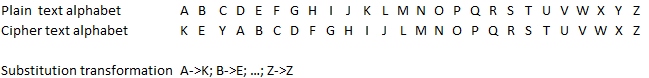

The (monoalphabetic) substitution cipher replaces each letter in the text with another, based on an key alphabet (generated from a keyword).
(Monoalphabetic) substitution itself is one of the basic cryptographic algorithm classes.
The monoalphabetic substitution replaces (substitutes) letters from the plain text, a, with letters from the cipher text alphabet, a‘. Every letter a has exactly one mapped a’, and every a’ is mapped to a letter a from the plain text alphabet at most once. Thus, it is a bijective mapping, and can be defined, based on the plain text alphabet, by specifying a substitution alphabet, which can have equal or more elements than the plain text alphabet. The character at index m of the plain text alphabet will always be mapped to the character at index m of the substitution alphabet. Such, the substitution alphabet is the key of the monoalphabetic substitution.
Writing down a whole alphabet is unhandy, so the substitution alphabet is generated from a key string in most cases:
Now an example: The word “SECRET” has to be encrypted with the keyword “KEY”. Below are the alphabets – in this notation it becomes clear how the substitution mapping works – replace each character from the first row with the one below it in the second row).

The encrypted word is „WIGVIX“.
At the decryption, the substitution mapping is inverted. It’s also possible to be defined as encryption with the former plaintext alphabet, taking the former substitution alphabet as actual plaintext alphabet. In the scheme above, all characters from the second row would be replaces with the ones above them (first row).